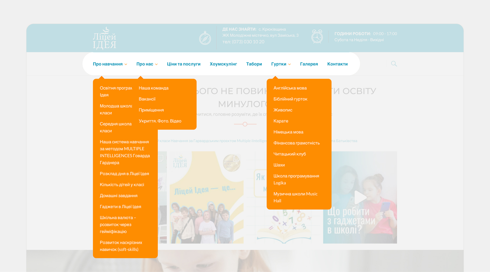
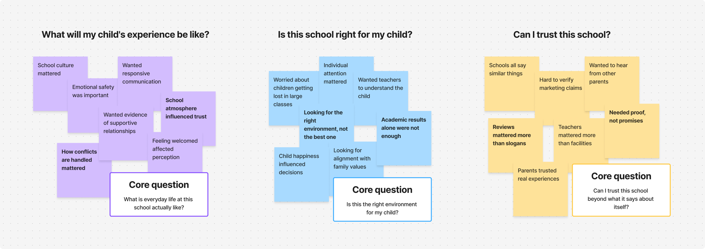
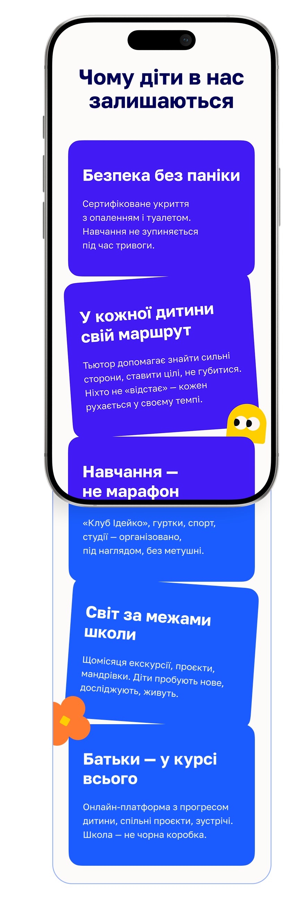
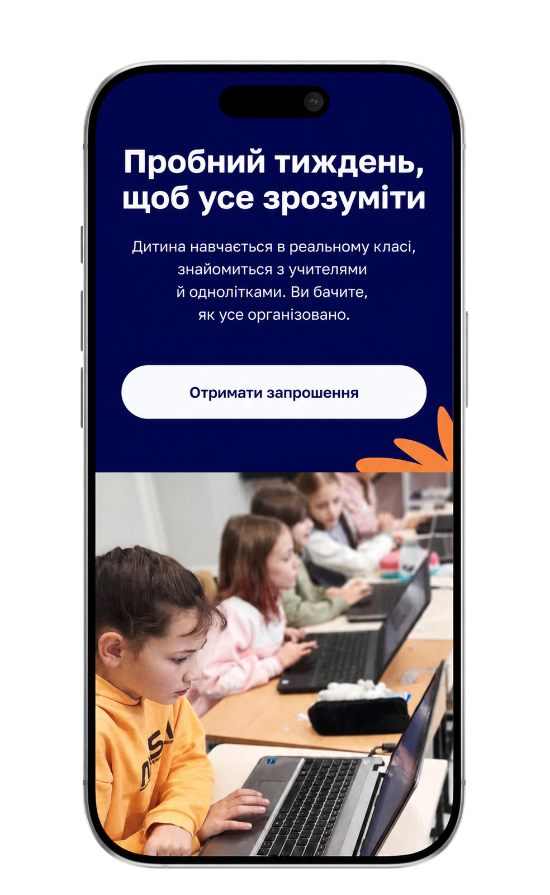
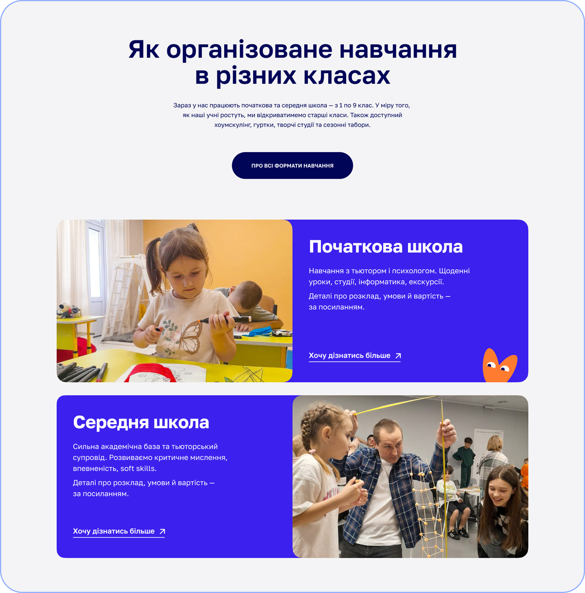
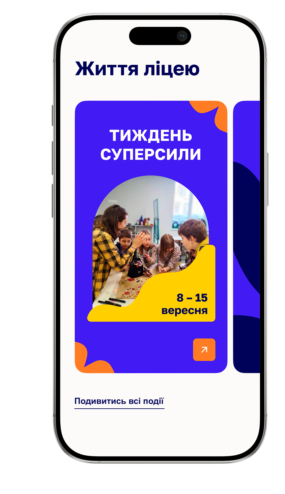
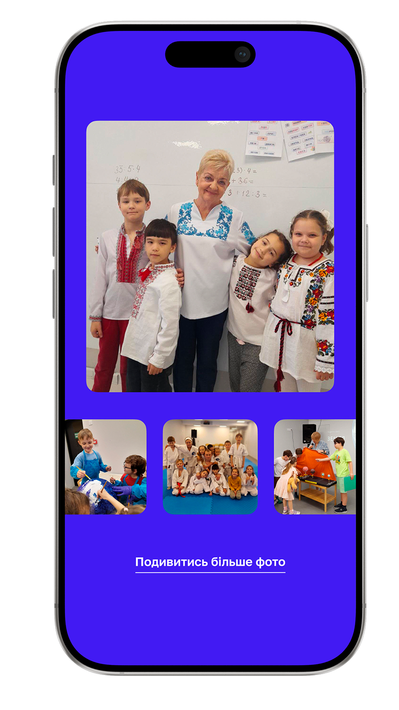

Visitors had to piece the information together themselves.
Case Study
2025
Idea School
Website redesign for a private school that helps parents figure out if it's the right fit for their child.

01
The Challenge
The information was there. It just wasn't organized around the questions parents were actually asking.
An audit confirmed it: this wasn't
a content problem.
It was
a structure problem.
To answer a single question - what does a typical day look like, what happens during an air raid alert, how does the tutor system work - visitors had to jump between multiple pages and still left without a clear answer.
School life stayed invisible.
The admission process had no clear path.
The site offered almost no proof -
just its own claims.
Existing Website Audit
Finding 01
Getting an answer to one question often meant going through several pages

Finding 02
It was hard to get a sense of what school life actually felt like.

Finding 03
Mobile navigation wasn't built for quick browsing.

Finding 04
Several calls to action competed for attention at once.

02
Research Approach
The research focused on understanding what criteria parents use when choosing a school, what builds their confidence and what creates doubt or hesitation.
- 4
- Parent Interviews
- 6
- School Websites Reviewed
- 24
- Issues Identified
Stakeholder Interview
Understand business goals and constraints.
Website Audit
Identify structural and content issues.
Parent Interviews
Understand how parents make decisions.
Competitor Review
Spot common patterns and opportunities.
Three questions came up in every conversation. They became the backbone of the redesign.

03
Turning insights into design decisions
What does school life actually look like day to day?
Not the curriculum, not the program -
what does an average
Tuesday feel like?
Design Principle
Show school life before making the case for it
The homepage doesn't open with program or academic achievements. It opens with what a day at Idea School looks like - a heated shelter, the tutor system, the time between classes. Parents need to picture the environment before they can evaluate it.
Is this school right for my child specifically?
Parents weren't evaluating the school in general. They were evaluating it for one particular kid.
Design Principle
One question reshaped the entire site structure
"Will this work for my child?" is not the same as "Is this a good school?" One word makes all the difference - it changes what comes first, what gets its own page and what can be cut.
Why should I trust this school?
Parent feedback, real teachers, actual moments from school life - anything that didn't come from the school itself.
Design Principle
Let others speak for the school
Parent feedback, teacher profiles and candid photos from school life carry more weight than anything the school writes about itself. The redesign makes room for that kind of evidence instead of filling pages with declarations.
04
From Questions to Screens
Guiding the First DecisionThe page doesn't walk parents through the school section by section. It moves them from understanding it to taking action.
Understand the School. Starts with the school's values, then moves to program and admission.
Assess whether it's the right fit. The tutor system, daily routines and the heated shelter during alerts. The details that help parents understand what everyday school life looks like.
Try Before Applying. A chance to see the school from the inside before submitting an application.


Program descriptions didn't answer the real question parents had: what does this actually look like? So learning formats are shown alongside real moments from school life, not to persuade, but to make the experience tangible before the first visit.



School Life. Shows what everyday life at school looks like beyond the classroom.
Gallery.
Gives parents a closer look
at the people, spaces and
atmosphere
of the school.
Parents don't trust what a school says about itself. They trust other parents, real teachers and real moments. This part of the site doesn't try to convince - it gives parents the material to reach their own conclusion: feedback, answers to questions that come up before the first call and content they can explore on their own terms.
05
Reflection
What started as a website redesign turned out to be an information architecture problem.
The school didn't need more content - it needed a clearer message. Once I understood what parents were actually trying to figure out, the structure became obvious. The homepage follows their questions, not the school's org chart.
The hardest editorial call was figuring out what to cut. There was a lot of content that was accurate but answered questions nobody was asking. Removing it felt risky at the time. Looking back, that was the most important design decision in the whole project.
Clarity matters more than persuasion. If a page doesn't answer the question parents have right now, it doesn't belong there.